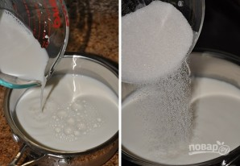

Близится торжество и вы непременно хотите побаловать близких и гостей вкуснейшим десертом? Тогда обратите внимание на это чудесный вариант, как приготовить красивый торт с нежным кремом и глазурью
|  | 1. Первым делом займемся кремом. Молоко с половиной сахара и ванильным экстрактом доведите до кипения. |
 |
2. Отдельно соедините оставшийся сахар, просеянную муку и какао. Вбейте яйца, перемешайте. |
| 3. Влейте немного молока, быстро перемешайте. Добавьте остальное молоко и поставьте на огонь. Постоянно помешивая крем, проварите его за загустения (минут 7-10) на медленном огне. | |
| 4. Снимите с огня, добавьте масло и еще раз взбейте. Накройте крем пленкой и оставьте до полного остывания. | |
| 5. Пока остывает заварной крем можно заняться коржами. Взбейте масло до пышности, добавьте яйца. | |
| 6. Выложите сметану, всыпьте просеянную с содой и солью муку. Тщательно перемешайте до однородности. | |
| 7. Готовое тесто разделите частей на 14 (примерно), скатайте каждую в шарик и отправьте в холодильник. | |
 |
8. Можно вернуться к крему. Сливочное масло взбейте, добавьте сгущенку, продолжая взбивать. |
| 9. Выложите остывший заварной крем и еще раз как следует перемешайте. Все, крем для нашего торта готов. | |
| 10. Разогрейте духовку до 200 градусов. Раскатайте очень тонко каждый шарик, сделайте проколы вилкой и выпекайте коржи до румяности около 5 минут. | |
| 11. Остывшие коржи перемажьте кремом и соберите торт. | |
| 12. Для покрытия торта взбейте до пышности сливки, добавьте сгущенку. | |
| 13. Тщательно промажьте верх и борта, выровняйте ножом или шпателем. Уберите тортик в холодильник на пару часов. | |
| 14. Для приготовления глазурь на водяной бане растопите шоколад и сливочное масло. | |
| 15. Влейте горячие сливки и тщательно перемешайте, пока глазурь не станет однородной. | |
| 16. Готовой глазурью полейте торт и оставьте до застывания. |
Вся информация взята с этого сайта